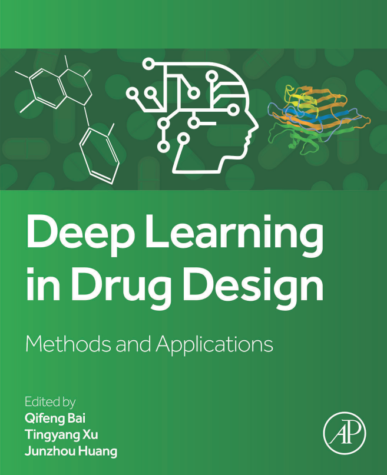

Qifeng Bai
Professor
School of Basic Medical Sciences
Lanzhou University
Lanzhou 730000, Gansu, P. R. China
Email: molaical@yeah.net or baiqf@lzu.edu.cn
ORCID: https://orcid.org/0000-0001-7296-6187
Google Scholar: https://scholar.google.com/citations?user=7w7Vwh0AAAAJ
ResearchGate: https://www.researchgate.net/profile/Qifeng-Bai
Homepage in Lanzhou University: jchyxyen.lzu.edu.cn
X (Twitter): https://x.com/MolAICal
Note: my homepage will be continuously updated in this page.
Research interests
1) Artificial intelligence for drug design including deep learning, machine learning, etc
2) Artificial intelligence in medicine, including dentistry, radiology, diagnostics, etc.
3) Software development for drug design such as MolAICal (https://molaical.github.io or https://molaical.gitlab.io)
4) Molecular dynamics simulations
5) Studying the biological mechanism of proteins and ligands by molecular dynamics simulations, machine learning and deep learning methods, QM/MM, etc
6) Bioinformatics, cheminformatics, biomedical informatics, and computational biology
7) Robotics for biochemistry based on Arduino, Raspberry, AI models, etc
8) Drug design of kinases, G protein-coupled receptors, and so on
Positions
1) Postdoctoral Position
2) Doctoral Position
3) Master's Degree Position
Selected Edited Books
1. Bai Q, Xu T, Huang J. Deep Learning in Drug Design Methods and Applications. In: Bai Q, Xu T, Huang J, editors. Elsevier (Academic Press); 2025. https://doi.org/10.1016/C2023-0-52311-0 or https://shop.elsevier.com/books/deep-learning-in-drug-design/bai/978-0-443-32908-1

Selected Edited Chapters (#: Co-first; *: Co-corresponding)
1. Bai Q*, Ma J, Xu T. AI Deep Learning Generative Models for Drug Discovery. In: Lyu Z, ed. Applications of Generative AI. Springer International Publishing; 2024:461-475. https://doi.org/10.1007/978-3-031-46238-2_23
2. Fu Y, Bai Q*. Artificial Intelligence in Peptide Drug Discovery. In: Lavecchia A, editor. Applied Artificial Intelligence for Drug Discovery: From Data-Driven Insights to Therapeutic Innovation. Cham: Springer Nature Switzerland; 2026. p. 187-212. https://link.springer.com/chapter/10.1007/978-3-031-98022-0_7
Selected Publications (#: Co-first; *: Co-corresponding)
[5]. Ma, J.#; Wu, F.#; Xu, T.; Xu, S.; Liu, W.; Yan, L.; Qu, M.; Yang, X.; Bai, Q.*,#; Xiao, J.*; Yao, J.*, An adaptive autoregressive diffusion approach to design active humanized antibodies and nanobodies. Nature Machine Intelligence 2025, 7 (10), 1698-1712. https://www.nature.com/articles/s42256-025-01120-9
[4]. Bai, Q.*, Xu, T.*, Huang, J. & Pérez-Sánchez, H.* Geometric deep learning methods and applications in 3D structure-based drug design. Drug Discov. Today 2024, 29 (7), 104024. https://doi.org/10.1016/j.drudis.2024.104024
Erratum discussion: download
[3]. Bai, Q.*, Liu, S., Tian, Y., Xu, T.*, Banegas-Luna, A. J., Pérez-Sánchez, H.*, et al. Application advances of deep learning methods for de novo drug design and molecular dynamics simulation. Wiley Interdisciplinary Reviews: Computational Molecular Science 2022, 12 (3), e1581. https://doi.org/10.1002/wcms.1581
[2]. Bai, Q.*, Ma, J., Liu, S., Xu, T., Banegas-Luna, A. J., Pérez-Sánchez, H.*, et al. WADDAICA: A webserver for aiding protein drug design by artificial intelligence and classical algorithm. Computational and Structural Biotechnology Journal 19, 3573-3579, (2021). https://doi.org/10.1016/j.csbj.2021.06.017
[1]. Bai, Q.*, et al. MolAICal: a soft tool for 3D drug design of protein targets by artificial intelligence and classical algorithm. Briefings in bioinformatics 2021, 22, bbaa161. https://doi.org/10.1093/bib/bbaa161
Selected Conference Papers (#: Co-first; *: Co-corresponding)
[1]. Sun, Y.*; Qian, X.; Xu, W.; Zhang, H.*; Xiao, C.; Li, L.; Zhao, D.; Huang, W.; Xu, T.*; Bai, Q.*; Rong, Y., ReasonMed: A 370K Multi-Agent Generated Dataset for Advancing Medical Reasoning. In Proceedings of the 2025 Conference on Empirical Methods in Natural Language Processing 2025, 26457-26478. https://aclanthology.org/2025.emnlp-main.1344. This study was highlighted by the Senior Area Chair. Please refer to: https://x.com/MolAICal/status/2000886275218530346